సివిక్స్, చరిత్ర, మరియు ప్రభుత్వ పరీక్షకు సిద్ధత
ప్రతి విద్యార్థికి వారి లక్ష్యాలు, భాష, మరియు నేచురలైజేషన్ ప్రక్రియలోని దశను ఆధారంగా చేసుకుని ఆచరణాత్మకమైన, గౌరవపూర్వకమైన సహాయం అందుతుంది.
హార్వర్డ్ పౌరసత్వ కార్యక్రమం మాసచుసెట్స్ అంతటా ఉన్న పెద్దలకు పౌరసత్వం మరియు నేచురలైజేషన్ కోసం ఉచిత, గోప్యమైన, బహుభాషా సహాయాన్ని అందిస్తుంది, మొదటి ప్రశ్న నుండి చివరి వేడుక వరకు.
రెండు దశాబ్దాలకు పైగా, ఈ కార్యక్రమం హార్వర్డ్ మరియు గ్రేటర్ బోస్టన్ సమాజ సభ్యులకు సివిక్స్, ఇంగ్లీష్, ఇంటర్వ్యూ సిద్ధత, N-400 సహాయం, మరియు దరఖాస్తు ఖర్చుల కోసం డైరెక్టర్లు నడిపే నిధుల సేకరణ ద్వారా మద్దతు అందించింది.
ప్రతి విద్యార్థికి వారి లక్ష్యాలు, భాష, మరియు నేచురలైజేషన్ ప్రక్రియలోని దశను ఆధారంగా చేసుకుని ఆచరణాత్మకమైన, గౌరవపూర్వకమైన సహాయం అందుతుంది.
ప్రతి విద్యార్థికి వారి లక్ష్యాలు, భాష, మరియు నేచురలైజేషన్ ప్రక్రియలోని దశను ఆధారంగా చేసుకుని ఆచరణాత్మకమైన, గౌరవపూర్వకమైన సహాయం అందుతుంది.
ప్రతి విద్యార్థికి వారి లక్ష్యాలు, భాష, మరియు నేచురలైజేషన్ ప్రక్రియలోని దశను ఆధారంగా చేసుకుని ఆచరణాత్మకమైన, గౌరవపూర్వకమైన సహాయం అందుతుంది.
ప్రతి విద్యార్థికి వారి లక్ష్యాలు, భాష, మరియు నేచురలైజేషన్ ప్రక్రియలోని దశను ఆధారంగా చేసుకుని ఆచరణాత్మకమైన, గౌరవపూర్వకమైన సహాయం అందుతుంది.
ప్రతి విద్యార్థికి వారి లక్ష్యాలు, భాష, మరియు నేచురలైజేషన్ ప్రక్రియలోని దశను ఆధారంగా చేసుకుని ఆచరణాత్మకమైన, గౌరవపూర్వకమైన సహాయం అందుతుంది.
ప్రతి విద్యార్థికి వారి లక్ష్యాలు, భాష, మరియు నేచురలైజేషన్ ప్రక్రియలోని దశను ఆధారంగా చేసుకుని ఆచరణాత్మకమైన, గౌరవపూర్వకమైన సహాయం అందుతుంది.
ప్రతి విద్యార్థికి వారి లక్ష్యాలు, భాష, మరియు నేచురలైజేషన్ ప్రక్రియలోని దశను ఆధారంగా చేసుకుని ఆచరణాత్మకమైన, గౌరవపూర్వకమైన సహాయం అందుతుంది.
మేము వ్యక్తిగత ట్యూటరింగ్, బహుభాషా సరిపోలిక, వారాంతపు బాధ్యత, మరియు ప్రత్యేక నిపుణత అవసరమైనప్పుడు చట్టపరమైన రిఫరల్ మార్గాలను కలిపి పనిచేస్తాము.
ప్రోగ్రామ్ డైరెక్టర్లు నమోదు చేసుకున్న ప్రతి వ్యక్తిని సుమారు రెండు రోజుల్లో సంప్రదించి లక్ష్యాలు, భాషా అవసరాలు, మరియు తదుపరి దశలను అర్థం చేసుకుంటారు.
విద్యార్థులను భాష, ట్యూటరింగ్ ఫార్మాట్, మరియు పౌరసత్వ ప్రయాణ దశ ఆధారంగా హార్వర్డ్ కాలేజ్లో శిక్షణ పొందిన ట్యూటర్లతో సరిపోలుస్తారు.
ట్యూటర్లు విద్యార్థులతో కనీసం వారానికి ఒకసారి ఆన్లైన్లో లేదా ప్రత్యక్షంగా కలుస్తారు, అవసరమైతే మరింత తరచుగా సెషన్లు జరుగుతాయి.
విద్యార్థులు సిద్ధత, దరఖాస్తు దశలు, ఇంటర్వ్యూ సాధన, మరియు చివరి వేడుక వరకు సహాయం పొందుతారు.
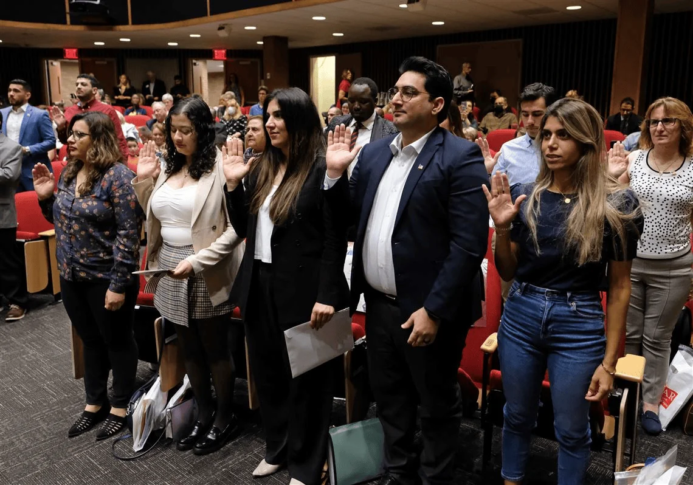
మా భాగస్వాములు పౌరసత్వ సహాయం ద్వారా లాభపడగల పెద్దలను గుర్తిస్తారు, విద్యార్థులను నమ్మదగిన రిఫరల్ మార్గాలతో కలుపుతారు, మరియు ప్రత్యేక మార్గదర్శకత్వం అవసరమైనప్పుడు చట్టపరమైన లేదా సంస్థాగత నిపుణతను అందిస్తారు.
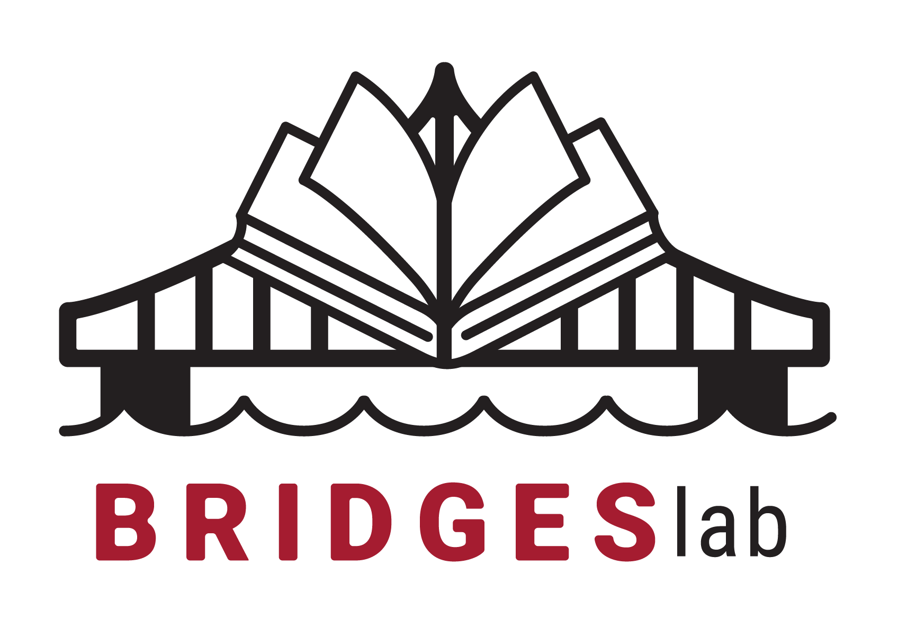
హార్వర్డ్ బ్రిడ్జ్ ప్రోగ్రామ్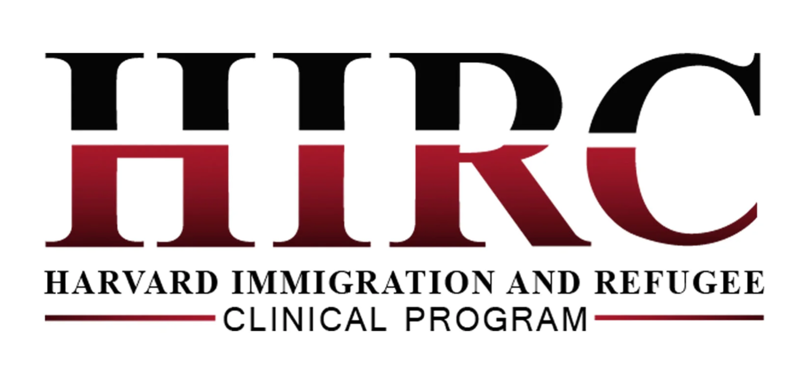
హార్వర్డ్ ఇమిగ్రేషన్ అండ్ రెఫ్యూజీ క్లినిక్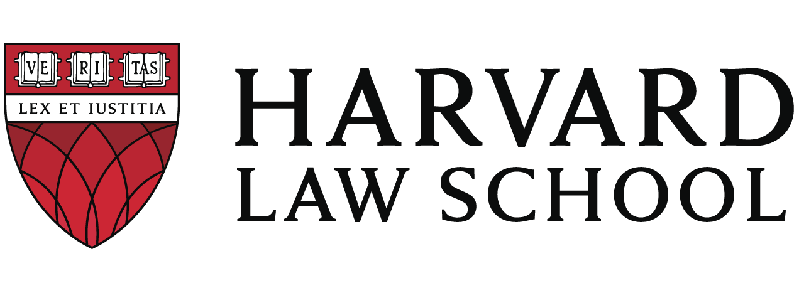
హార్వర్డ్ లా స్కూల్హార్వర్డ్ కెన్నెడీ స్కూల్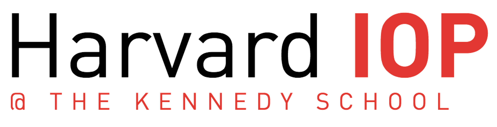
హార్వర్డ్ Institute of Politics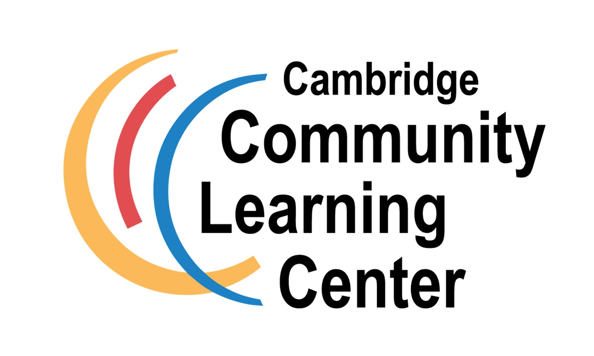
కేంబ్రిడ్జ్ కమ్యూనిటీ లెర్నింగ్ సెంటర్కేంబ్రిడ్జ్ వలసదారుల హక్కులు మరియు పౌరసత్వ కమిషన్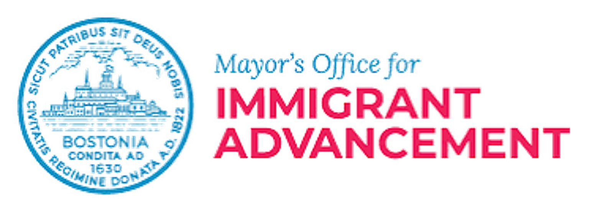
బోస్టన్ మేయర్ వలసదారుల అభివృద్ధి కార్యాలయం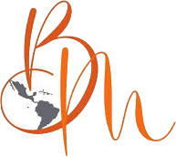
Beyanid Montoya-Sheehan చట్ట కార్యాలయాలు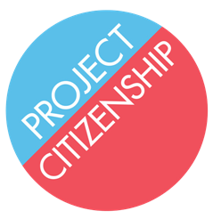
Project Citizenship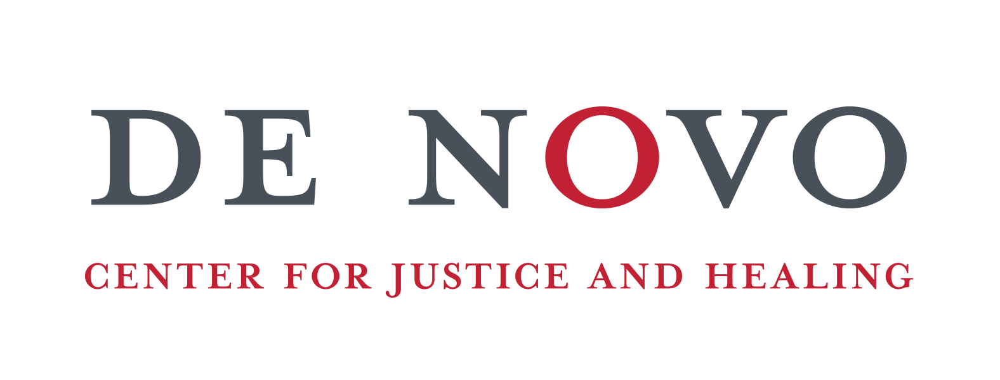
De Novo Center for Justice and Healingహార్వర్డ్ బ్రిడ్జ్ ప్రోగ్రామ్హార్వర్డ్ ఇమిగ్రేషన్ అండ్ రెఫ్యూజీ క్లినిక్హార్వర్డ్ లా స్కూల్హార్వర్డ్ కెన్నెడీ స్కూల్హార్వర్డ్ Institute of Politicsకేంబ్రిడ్జ్ కమ్యూనిటీ లెర్నింగ్ సెంటర్కేంబ్రిడ్జ్ వలసదారుల హక్కులు మరియు పౌరసత్వ కమిషన్బోస్టన్ మేయర్ వలసదారుల అభివృద్ధి కార్యాలయంBeyanid Montoya-Sheehan చట్ట కార్యాలయాలుProject CitizenshipDe Novo Center for Justice and Healing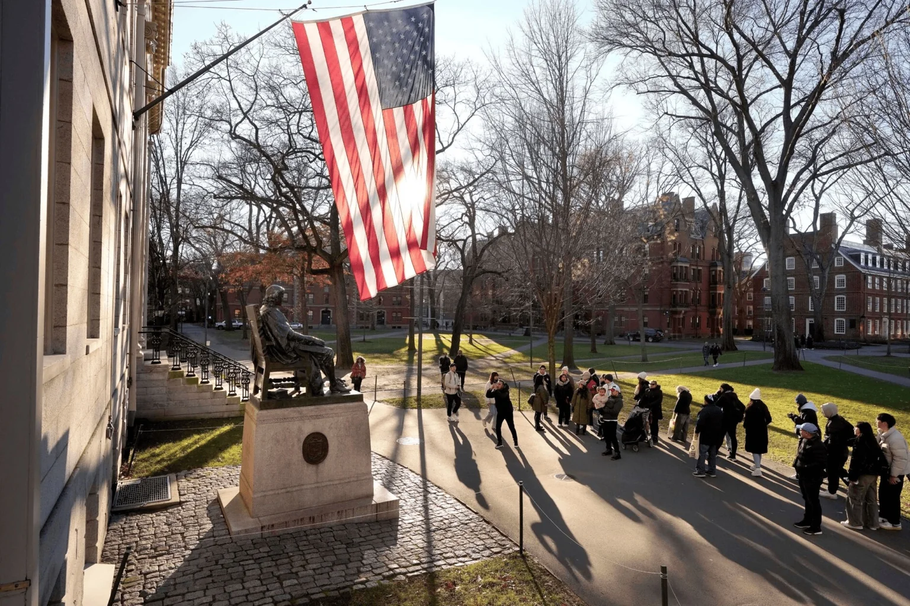
ప్రోగ్రామ్ విద్యార్థులను సంప్రదించడానికి, వారి భాషా ప్రాధాన్యతలను అర్థం చేసుకోవడానికి, మరియు వారిని ట్యూటర్లతో సరిపోల్చడానికి అవసరమైన సమాచారాన్ని మాత్రమే సేకరిస్తుంది. విద్యార్థుల సమాచారం HKS-IOP అధికారిక ప్రోగ్రామ్ ఫైళ్లలో భద్రపరచబడుతుంది మరియు అధికృత HKS-IOP సిబ్బంది మరియు ప్రోగ్రామ్ డైరెక్టర్లకే అందుబాటులో ఉంటుంది. విద్యార్థి స్పష్టంగా రిఫరల్ సహాయం కోరితే తప్ప మేము భాగస్వాములు లేదా బయటి సంస్థలతో సమాచారాన్ని పంచుకోము. మేము విద్యార్థి పేరు, ఫోటో, కథ, లేదా వ్యక్తిగత సమాచారాన్ని లిఖిత అనుమతి లేకుండా ఎప్పుడూ ప్రచురించము.
మొదటి ఫారం నుండి చివరి వేడుక వరకు మేము మీతో పాటు ఉంటాము. మా డైరెక్టర్లు నడిపే నిధుల సేకరణ దరఖాస్తు ఖర్చులను తగ్గించడంలో సహాయపడుతుంది, తద్వారా విద్యార్థులు మా సేవలకు ఎప్పుడూ చెల్లించాల్సిన అవసరం లేదు.
సహ-డైరెక్టర్
Mateo Hernández-Hernández ’28 హార్వర్డ్ పౌరసత్వ కార్యక్రమం సహ-డైరెక్టర్. ఆయన Nuevo Laredo, Mexico మరియు Laredo, Texas నుండి వచ్చిన Lowell House రెండవ సంవత్సరం విద్యార్థి, మరియు Neurobiology, Anthropology, Chemistry & Chemical Biology చదువుతున్నారు. ఆయన ప్రోగ్రామ్ నిర్మాణం, గ్రేటర్ బోస్టన్ చేరిక, నవీకరించిన ట్యూటరింగ్ వనరులు, మరియు బహుభాషా సేవపై దృష్టి పెడతారు.
mhernandezhernandez@college.harvard.eduసహ-డైరెక్టర్
Susie Coakley ’29 హార్వర్డ్ పౌరసత్వ కార్యక్రమం సహ-డైరెక్టర్. ఆమె Elm Grove, Wisconsin నుండి వచ్చిన మొదటి సంవత్సరం విద్యార్థి, మరియు Government, Economics చదువుతున్నారు. ఆమె సమాజ భాగస్వామ్యాలు, ప్రోగ్రామ్ సామర్థ్యం, మరియు ట్యూటర్లు, విద్యార్థుల మధ్య అర్థవంతమైన సంబంధాలపై దృష్టి పెడతారు.
scoakley@college.harvard.eduమా 2026 నేచురలైజేషన్ గ్రాడ్యుయేషన్ వేడుకలోని ఒక క్షణం, ఒక విద్యార్థి అమెరికా పౌరసత్వం వరకు చేసిన విజయవంతమైన ప్రయాణాన్ని జరుపుకున్నది. ఇది లిఖిత అనుమతితో పంచుకోబడింది.
“మీ విజయము అమెరికా పౌరసత్వాన్ని ఎప్పుడూ సాధారణంగా తీసుకోకూడదని మాకు గుర్తు చేస్తుంది.”
“అమెరికా పౌరురాలిగా మారటం నాకు ముఖ్యమైనది, ఎందుకంటే ఓటు ద్వారా నా అభిప్రాయం లెక్కించబడుతుందని దాని అర్థం.”
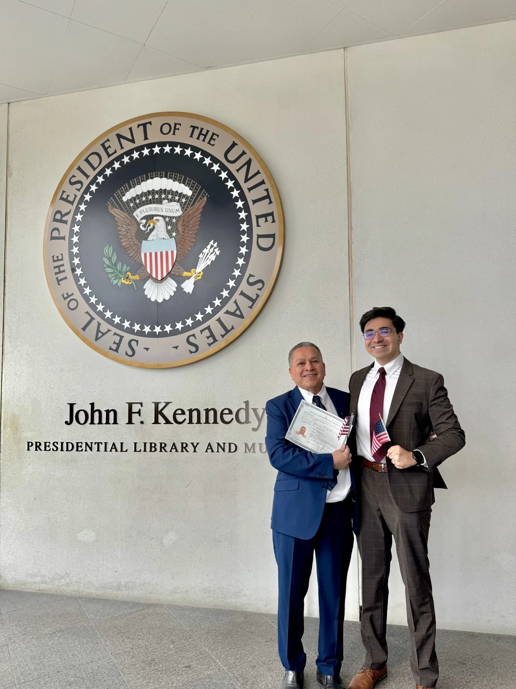
ఈ కార్యక్రమం ప్రతి విద్యార్థికి ఉచితం. దానాలు మరియు వస్తు సహాయం N-400 ఫైలింగ్ సహాయం, రవాణా, ముద్రిత సామగ్రి, ట్యూటరింగ్ సరఫరాలు, సమాజ చేరిక, సాంకేతికత, అనువాద సహాయం, నోట్బుక్లు, ఫోల్డర్లు, పెన్నులు, పెన్సిల్లు, ల్యాప్టాప్లు, పుస్తకాలు, మరియు ఇతర విద్యా సామగ్రి ఖర్చులను కవర్ చేయటానికి సహాయపడతాయి.
ప్రోగ్రామ్కు మద్దతు ఇవ్వడానికి, సహ-డైరెక్టర్లను citizenship@harvardiop.org వద్ద సంప్రదించండి.
మద్దతు గురించి సంప్రదించండివిద్యార్థి సహాయం, భాగస్వామి రిఫరల్స్, మీడియా, దాతల ప్రశ్నలు, లేదా పరిపాలనా అభ్యర్థనల కోసం ప్రోగ్రామ్ను సంప్రదించండి లేదా క్రింద సందేశం పంపండి.
హార్వర్డ్ కాలేజ్ విద్యార్థులు IOP Common Application ద్వారా దరఖాస్తు చేస్తారు. దరఖాస్తులు మూసివేసినప్పుడు, విద్యార్థులు ఆసక్తి జాబితాలో చేరవచ్చు.
అవును. హార్వర్డ్ పౌరసత్వ కార్యక్రమం అందించే ప్రతి సేవ ఉచితం. విద్యార్థులు ట్యూటరింగ్, ఇంగ్లీష్ నేర్చుకునే సహాయం, సివిక్స్ సిద్ధత, N-400 సహాయం, ఇంటర్వ్యూ సాధన, లేదా ప్రోగ్రామ్లో పాల్గొనడానికి డబ్బు చెల్లించరు.
Commonwealth of Massachusettsలో నివసించే ఏ పెద్దవారైనా నమోదు చేసుకోవచ్చు. విద్యార్థులు హార్వర్డ్ ఉద్యోగులు కావాల్సిన అవసరం లేదు లేదా ముందుగా హార్వర్డ్తో సంబంధం ఉండాల్సిన అవసరం లేదు.
అవును. కుటుంబ సభ్యులు, హార్వర్డ్ ఉద్యోగులు, మరియు సమాజ భాగస్వాములు ఒక పెద్దల విద్యార్థిని నమోదు చేయవచ్చు. తగిన సందర్భంలో మేము విద్యార్థిని నేరుగా సంప్రదిస్తాము.
అవును. మేము ఇంగ్లీష్ నేర్చుకోవడానికి సహాయం అందిస్తాము మరియు సాధ్యమైనప్పుడు విద్యార్థులను వారి ప్రాధాన్య భాష మాట్లాడే ట్యూటర్లతో సరిపోల్చడానికి ప్రయత్నిస్తాము.
అవును. ట్యూటర్ల భాషా సామర్థ్యంలో స్పానిష్, మాండరిన్, హైతియన్ క్రియోల్, ఫ్రెంచ్, కాంటనీస్, వియత్నామీస్, అరబిక్, రష్యన్, ఇటాలియన్, హిందీ, కేప్ వెర్డియన్ క్రియోల్, కొరియన్, జర్మన్, తెలుగు, అమ్హారిక్, టగాలోగ్, జపనీస్, ఉర్దూ, అల్బేనియన్, ఫార్సీ, థాయ్, పంజాబీ, యోరుబా, స్వాహిలీ, మంగోలియన్, మరియు ఇంగ్లీష్ ఉన్నాయి.
అవును. శిక్షణ పొందిన ట్యూటర్లు విద్యార్థులు N-400 ప్రక్రియను అర్థం చేసుకోవడంలో మరియు దానిపై పని చేయడంలో సహాయపడగలరు. విద్యార్థులు తమ స్వంత దరఖాస్తుకు బాధ్యత వహిస్తారు.
లేదు. హార్వర్డ్ పౌరసత్వ కార్యక్రమం చట్టపరమైన సలహా లేదా చట్టపరమైన ప్రాతినిధ్యం అందించదు. చట్టపరమైన ప్రశ్నలు వచ్చినప్పుడు, డైరెక్టర్లు విద్యార్థులను తగిన సందర్భాల్లో నమ్మదగిన చట్టపరమైన భాగస్వాములతో కలుపుతారు.
విద్యార్థులు తమ ట్యూటర్లతో కనీసం వారానికి ఒకసారి కలుస్తారు. అదనపు సమావేశాలు విద్యార్థి అవసరం మరియు ట్యూటర్ అందుబాటులో ఉండటాన్ని ఆధారంగా చేసుకుని ఏర్పాటు చేయవచ్చు.
అవును. ట్యూటరింగ్ ఆన్లైన్లో లేదా ప్రత్యక్షంగా జరగవచ్చు, మరియు అది విద్యార్థి, ట్యూటర్ మధ్య ఏర్పాటు చేయబడుతుంది. ప్రత్యక్ష సమావేశాలు కమ్యూనిటీ సెంటర్లు, లైబ్రరీలు, లేదా హార్వర్డ్ భవనాల్లో జరగవచ్చు.
ప్రోగ్రామ్లో మూడు సరిపోలిక కాలాలు ఉన్నాయి. జూలై 1 నుండి సెప్టెంబర్ 30 వరకు నమోదులు సెప్టెంబర్ తరగతుల ప్రారంభంలో చేరతాయి. అక్టోబర్ 1 నుండి ఫిబ్రవరి 28 వరకు నమోదులు ఫిబ్రవరి తరగతుల ప్రారంభంలో చేరతాయి. మార్చి 1 నుండి జూన్ 30 వరకు నమోదులు జూన్ తరగతుల ప్రారంభంలో చేరతాయి.
అవును. గోప్యత ఈ ప్రోగ్రామ్లో కేంద్రీయ భాగం. విద్యార్థి స్పష్టంగా రిఫరల్ సహాయం కోరితే తప్ప మేము విద్యార్థి సమాచారాన్ని భాగస్వాములు లేదా బయటి సంస్థలతో పంచుకోము.
లిఖిత అనుమతి లేకుండా ఎప్పుడూ కాదు.